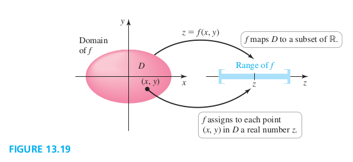
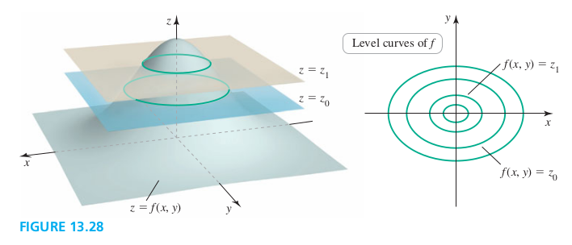

Section 13.2 Graphs and Level Curves
Functions of Two Variables
In general, functions of two variables are written explicitly in the form
or in the form
Function, Domain, and Range with Two Independent Variables
A function assigns to each point in a set D in \R^2 a unique real number in a subset of \R^2. The set is the domain of . The range of is the set of real numbers that are assumed as the points vary over the domain (Figure 13.19).

Graphs of Functions of Two Variables
Examples
1. Graphing two-variable functions Find the domain and range of the following functions. Then sketch a graph.
a. b.
c.
Solution
Todo
Level Curves
